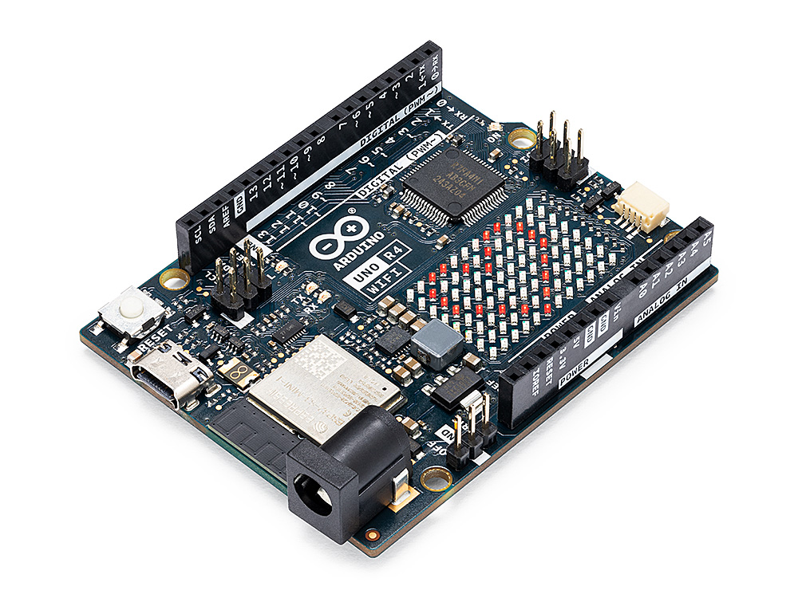
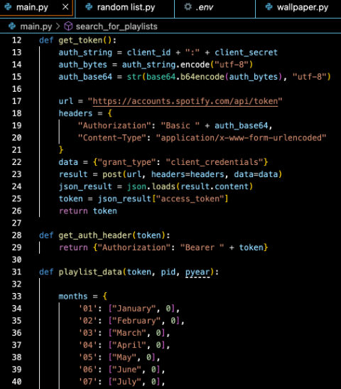

MY PAST WITH COMPUTING



My very first experience with coding
was in Year 5. My brother and I enrolled in the Premier's
Coding Challenge, which was a competition open to Year 7-8 where
students had to use an Arduino to make a fun product. We created a
version of Whack-A-Mole using aluminium foil, a spoon and an Arduino!
During high school, I developed my own program
which analysed the published playlists of Triple J on Spotify to gain
insights into track length, song genre and release date. This was a part
of my Maths IA assessment where I created an algorithm to predict the makeup
of the Hottest 100 over time!
I've since worked on expanding my portfolio of languages.
My very first language was Python which my dad taught me, followed by a bit of C++
to program the Arduino. High school taught me HTML and CSS, and now in university I
am learning about Java and how to implement OOP into Python! I want to learn PHP/SQL
to get prepared for Database Fundamentals...